RH850 UART0 DMA TX / RX (DMA/interrupt + idle timer)
Reference Project
This training material is based on the below reference project:
Agenda
- System overview
- DMA access: PEG & register update
- Memory map
- SRAM allocation (DMA buffer)
- DMA address / register map
- UART address / register map
- Smart Config settings
- Code flow: TX DMA / RX interrupt / / RX DMA
- RX idle detection timer
- Debug watch window
1. System overview
Base board & MCU
- EVM : Y-BLDC-SK-RH850F1KM-S1-V2 (R7F701684/LQFP100/1MB flash)
- project MCU change to R7F7016923 (LQFP64/512K flash)
Peripherals
-
TAUJ0_0 : timer interval for 1ms interrupt
-
UART1 : RLIN31 (TX > P10_12 , RX > P10_11) , for printf and receive from keyboard
-
TAUJ1_0 : timer interval for UART1 RX idle byte detection
- baud rate 115200 : 217us
- baud rate 415000 : 60.24us
-
UART0 : RLIN30 (TX > P10_10 , RX > P10_09)
- UART0 TX : DMA
- UART0 RX : DMA/regular interrupt , with timer IRQ for idle detection
-
check below define in app_uart0_config.h
/* UART0 RX mode select: 1 = DMA RX, 0 = interrupt RX-only */
#define APP_UART0_RX_MODE_DMA (1U)
- modify cstart.asm , to increase stack size
;-----------------------------------------------------------------------------
; system stack
;-----------------------------------------------------------------------------
STACKSIZE .set 0x1000
.section ".stack.bss", bss
.align 4
.ds (STACKSIZE)
.align 4
_stacktop:
2. DMA access: PEG & register update
Before using DMA to access SRAM, PEG registers must be configured.
- set
PEG.SP(SPEN = 1) - set
PEG.GnMK - set
PEG.GnBA - set
PDMAnDMyiCM - set
PDMA0.DM00CM / DM01CM(SPID / PE / supervisor)
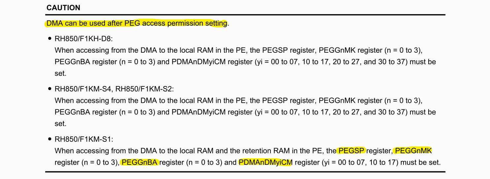
PEG register references
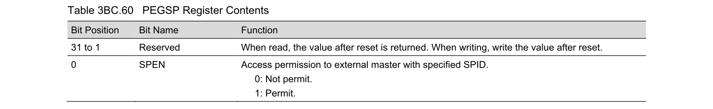
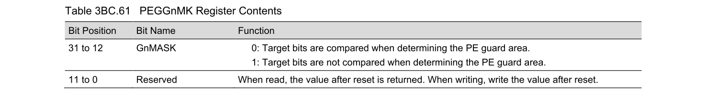
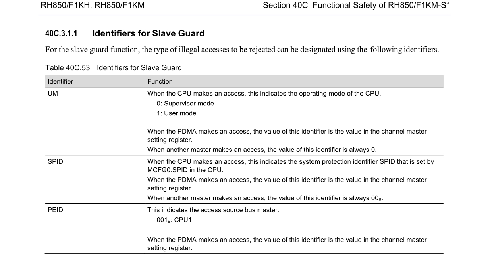
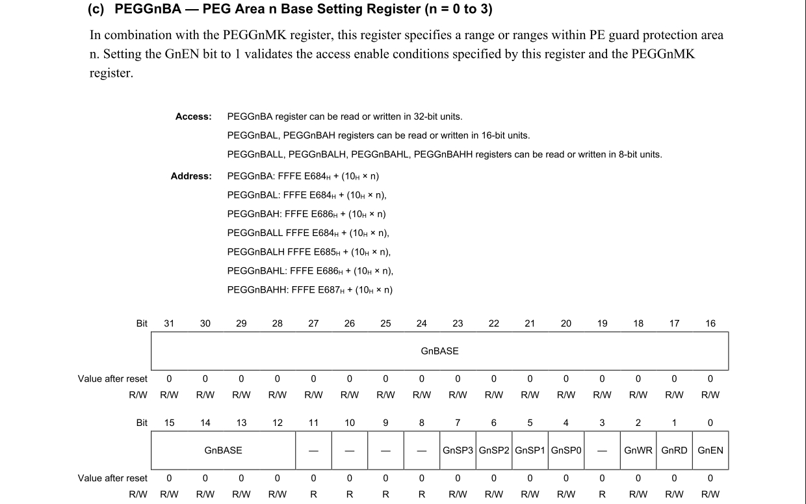
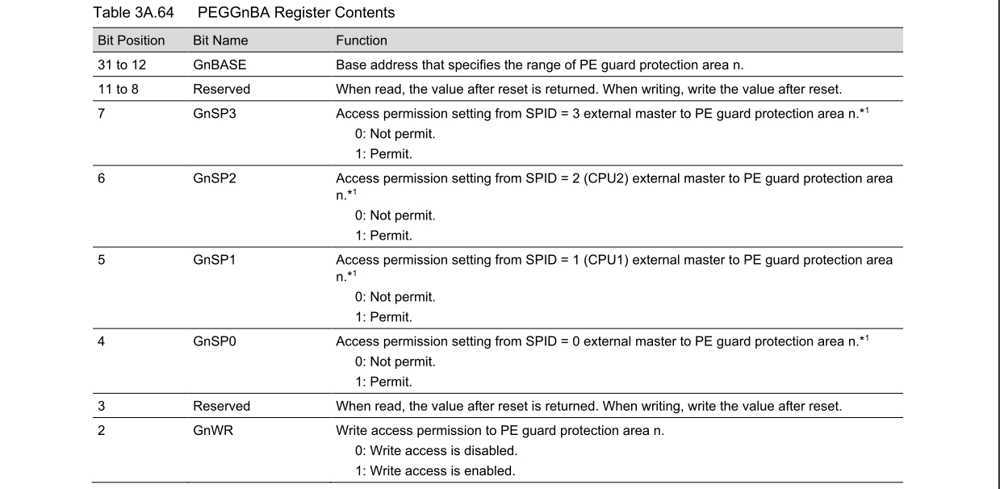
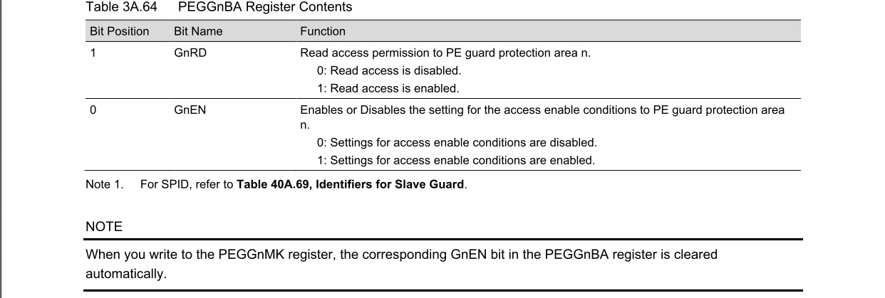
Example code
PDMA0.DM00CM = _DMAC_PE1_SETTING | _DMAC_SPID0_SETTING | _DMAC_SUPERVISON_MODE;
PDMA0.DM01CM = _DMAC_PE1_SETTING | _DMAC_SPID0_SETTING | _DMAC_SUPERVISON_MODE;
PEG.SP.UINT32 = 0x00000001U; /* SPEN = 1, permit access */
PEG.G0MK.UINT32 = 0xFFFFF000U; /* 32KB window mask */
PEG.G0BA.UINT32 = ADDR_LOCAL_RAM_CPU1 | /* Base address of PE Guard protection Area (start of Local RAM) */
(0x1U<<7U) | /* Enable Access for SPID 3 */
(0x1U<<6U) | /* Enable Access for SPID 2 */
(0x1U<<5U) | /* Enable Access for SPID 1 */
(0x1U<<4U) | /* Enable Access for SPID 0 */
(0x1U<<2U) | /* Write access is enabled */
(0x1U<<1U) | /* Read access is enabled */
(0x1U<<0U); /* Settings for access enable conditions are enabled */
/* LOCAL_RAM_CPU1 start address (PEG) */
#define ADDR_LOCAL_RAM_CPU1 (0xFEBF0000)
3. Memory map (RH850/F1KM-S1)
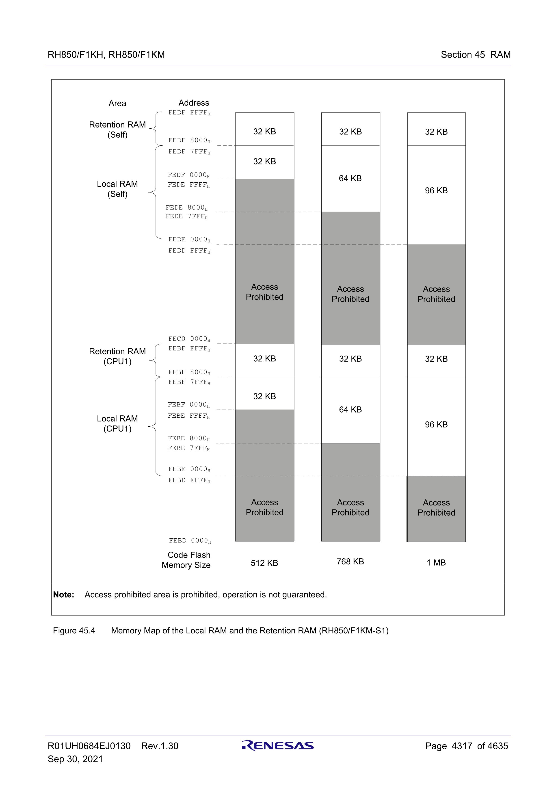
| FLASH | LOCAL RAM(CPU1) | RETENTION RAM(CPU1) | LOCAL RAM(SELF) | RETENTION RAM(SELF) |
|---|---|---|---|---|
| 512K | 0xFEBF0000 ~ 0xFEBF7FFF |
0xFEBF8000 ~ 0xFEBFFFFF |
0xFEDF0000 ~ 0xFEDF7FFF |
0xFEDF8000 ~ 0xFEDFFFFF |
| 768K | 0xFEBE8000 ~ 0xFEBF7FFF |
0xFEBF8000 ~ 0xFEBFFFFF |
0xFEDE8000 ~ 0xFEDF7FFF |
0xFEDF8000 ~ 0xFEDFFFFF |
| 1MB | 0xFEBE0000 ~ 0xFEBF7FFF |
0xFEBF8000 ~ 0xFEBFFFFF |
0xFEDE0000 ~ 0xFEDF7FFF |
0xFEDF8000 ~ 0xFEDFFFFF |
Memory map + Product lineup memo
Source:
REN_r01uh0684ej0130-rh850f1kh-rh850f1km_MAH_20210929.pdf- Section
1A/1B/1C.3 Product Lineup - Section
45.2 Memory Configuration(Figure45.1to45.4)
F1KM-S1

| Series | Pin count | Code Flash size | LOCAL RAM(CPU1) | RETENTION RAM(CPU1) | LOCAL RAM(SELF) | RETENTION RAM(SELF) | Part Name |
|---|---|---|---|---|---|---|---|
| F1KM-S1 | 100 | 512K | 0xFEBF0000 ~ 0xFEBF7FFF |
0xFEBF8000 ~ 0xFEBFFFFF |
0xFEDF0000 ~ 0xFEDF7FFF |
0xFEDF8000 ~ 0xFEDFFFFF |
105C: R7F7016863AFP-C / 125C: R7F7016864AFP-C |
| F1KM-S1 | 100 | 768K | 0xFEBE8000 ~ 0xFEBF7FFF |
0xFEBF8000 ~ 0xFEBFFFFF |
0xFEDE8000 ~ 0xFEDF7FFF |
0xFEDF8000 ~ 0xFEDFFFFF |
105C: R7F7016853AFP-C / 125C: R7F7016854AFP-C |
| F1KM-S1 | 100 | 1MB | 0xFEBE0000 ~ 0xFEBF7FFF |
0xFEBF8000 ~ 0xFEBFFFFF |
0xFEDE0000 ~ 0xFEDF7FFF |
0xFEDF8000 ~ 0xFEDFFFFF |
105C: R7F7016843AFP-C / 125C: R7F7016844AFP-C |
| F1KM-S1 | 80 | 512K | 0xFEBF0000 ~ 0xFEBF7FFF |
0xFEBF8000 ~ 0xFEBFFFFF |
0xFEDF0000 ~ 0xFEDF7FFF |
0xFEDF8000 ~ 0xFEDFFFFF |
105C: R7F7016893AFP-C / 125C: R7F7016894AFP-C |
| F1KM-S1 | 80 | 768K | 0xFEBE8000 ~ 0xFEBF7FFF |
0xFEBF8000 ~ 0xFEBFFFFF |
0xFEDE8000 ~ 0xFEDF7FFF |
0xFEDF8000 ~ 0xFEDFFFFF |
105C: R7F7016883AFP-C / 125C: R7F7016884AFP-C |
| F1KM-S1 | 80 | 1MB | 0xFEBE0000 ~ 0xFEBF7FFF |
0xFEBF8000 ~ 0xFEBFFFFF |
0xFEDE0000 ~ 0xFEDF7FFF |
0xFEDF8000 ~ 0xFEDFFFFF |
105C: R7F7016873AFP-C / 125C: R7F7016874AFP-C |
| F1KM-S1 | 64 | 512K | 0xFEBF0000 ~ 0xFEBF7FFF |
0xFEBF8000 ~ 0xFEBFFFFF |
0xFEDF0000 ~ 0xFEDF7FFF |
0xFEDF8000 ~ 0xFEDFFFFF |
105C: R7F7016923AFP-C / 125C: R7F7016924AFP-C |
| F1KM-S1 | 64 | 768K | 0xFEBE8000 ~ 0xFEBF7FFF |
0xFEBF8000 ~ 0xFEBFFFFF |
0xFEDE8000 ~ 0xFEDF7FFF |
0xFEDF8000 ~ 0xFEDFFFFF |
105C: R7F7016913AFP-C / 125C: R7F7016914AFP-C |
| F1KM-S1 | 64 | 1MB | 0xFEBE0000 ~ 0xFEBF7FFF |
0xFEBF8000 ~ 0xFEBFFFFF |
0xFEDE0000 ~ 0xFEDF7FFF |
0xFEDF8000 ~ 0xFEDFFFFF |
105C: R7F7016903AFP-C / 125C: R7F7016904AFP-C |
| F1KM-S1 | 48 | 512K | 0xFEBF0000 ~ 0xFEBF7FFF |
0xFEBF8000 ~ 0xFEBFFFFF |
0xFEDF0000 ~ 0xFEDF7FFF |
0xFEDF8000 ~ 0xFEDFFFFF |
105C: R7F7016953AFP-C / 125C: R7F7016954AFP-C |
| F1KM-S1 | 48 | 768K | 0xFEBE8000 ~ 0xFEBF7FFF |
0xFEBF8000 ~ 0xFEBFFFFF |
0xFEDE8000 ~ 0xFEDF7FFF |
0xFEDF8000 ~ 0xFEDFFFFF |
105C: R7F7016943AFP-C / 125C: R7F7016944AFP-C |
| F1KM-S1 | 48 | 1MB | 0xFEBE0000 ~ 0xFEBF7FFF |
0xFEBF8000 ~ 0xFEBFFFFF |
0xFEDE0000 ~ 0xFEDF7FFF |
0xFEDF8000 ~ 0xFEDFFFFF |
105C: R7F7016933AFP-C / 125C: R7F7016934AFP-C |
F1KM-S2


| Series | Pin count | Code Flash size | LOCAL RAM(CPU1) | RETENTION RAM(Bank B) | LOCAL RAM(SELF) | GLOBAL RAM(Bank A) | GLOBAL RAM(Bank B) | Part Name |
|---|---|---|---|---|---|---|---|---|
| F1KM-S2 | 100 | 2MB | 0xFEBE0000 ~ 0xFEBFFFFF |
0xFEF08000 ~ 0xFEF0FFFF |
0xFEDE0000 ~ 0xFEDFFFFF |
0xFEEF4000 ~ 0xFEEFFFFF |
0xFEFF4000 ~ 0xFEFFFFFF |
105C: R7F7017603AFP-C / 125C: - |
| F1KM-S2 | 144 | 2MB | 0xFEBE0000 ~ 0xFEBFFFFF |
0xFEF08000 ~ 0xFEF0FFFF |
0xFEDE0000 ~ 0xFEDFFFFF |
0xFEEF4000 ~ 0xFEEFFFFF |
0xFEFF4000 ~ 0xFEFFFFFF |
105C: R7F7017623AFP-C / 125C: - |
| F1KM-S2 | 176 | 2MB | 0xFEBE0000 ~ 0xFEBFFFFF |
0xFEF08000 ~ 0xFEF0FFFF |
0xFEDE0000 ~ 0xFEDFFFFF |
0xFEEF4000 ~ 0xFEEFFFFF |
0xFEFF4000 ~ 0xFEFFFFFF |
105C: R7F7017643AFP-C / 125C: - |
F1KM-S4

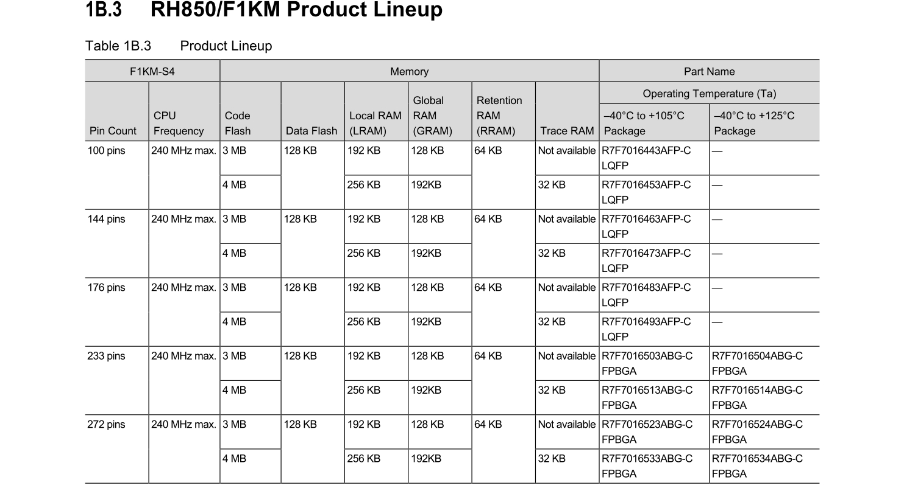
| Series | Pin count | Code Flash size | LOCAL RAM(CPU1) | RETENTION RAM(Bank B) | LOCAL RAM(SELF) | GLOBAL RAM(Bank A) | GLOBAL RAM(Bank B) | Part Name |
|---|---|---|---|---|---|---|---|---|
| F1KM-S4 | 100 | 3MB | 0xFEBD0000 ~ 0xFEBFFFFF |
0xFEF00000 ~ 0xFEF0FFFF |
0xFEDD0000 ~ 0xFEDFFFFF |
0xFEEF0000 ~ 0xFEEFFFFF |
0xFEFF0000 ~ 0xFEFFFFFF |
105C: R7F7016443AFP-C / 125C: - |
| F1KM-S4 | 100 | 4MB | 0xFEBC0000 ~ 0xFEBFFFFF |
0xFEF00000 ~ 0xFEF0FFFF |
0xFEDC0000 ~ 0xFEDFFFFF |
0xFEEE8000 ~ 0xFEEFFFFF |
0xFEFE8000 ~ 0xFEFFFFFF |
105C: R7F7016453AFP-C / 125C: - |
| F1KM-S4 | 144 | 3MB | 0xFEBD0000 ~ 0xFEBFFFFF |
0xFEF00000 ~ 0xFEF0FFFF |
0xFEDD0000 ~ 0xFEDFFFFF |
0xFEEF0000 ~ 0xFEEFFFFF |
0xFEFF0000 ~ 0xFEFFFFFF |
105C: R7F7016463AFP-C / 125C: - |
| F1KM-S4 | 144 | 4MB | 0xFEBC0000 ~ 0xFEBFFFFF |
0xFEF00000 ~ 0xFEF0FFFF |
0xFEDC0000 ~ 0xFEDFFFFF |
0xFEEE8000 ~ 0xFEEFFFFF |
0xFEFE8000 ~ 0xFEFFFFFF |
105C: R7F7016473AFP-C / 125C: - |
| F1KM-S4 | 176 | 3MB | 0xFEBD0000 ~ 0xFEBFFFFF |
0xFEF00000 ~ 0xFEF0FFFF |
0xFEDD0000 ~ 0xFEDFFFFF |
0xFEEF0000 ~ 0xFEEFFFFF |
0xFEFF0000 ~ 0xFEFFFFFF |
105C: R7F7016483AFP-C / 125C: - |
| F1KM-S4 | 176 | 4MB | 0xFEBC0000 ~ 0xFEBFFFFF |
0xFEF00000 ~ 0xFEF0FFFF |
0xFEDC0000 ~ 0xFEDFFFFF |
0xFEEE8000 ~ 0xFEEFFFFF |
0xFEFE8000 ~ 0xFEFFFFFF |
105C: R7F7016493AFP-C / 125C: - |
| F1KM-S4 | 233 | 3MB | 0xFEBD0000 ~ 0xFEBFFFFF |
0xFEF00000 ~ 0xFEF0FFFF |
0xFEDD0000 ~ 0xFEDFFFFF |
0xFEEF0000 ~ 0xFEEFFFFF |
0xFEFF0000 ~ 0xFEFFFFFF |
105C: R7F7016503ABG-C / 125C: R7F7016504ABG-C |
| F1KM-S4 | 233 | 4MB | 0xFEBC0000 ~ 0xFEBFFFFF |
0xFEF00000 ~ 0xFEF0FFFF |
0xFEDC0000 ~ 0xFEDFFFFF |
0xFEEE8000 ~ 0xFEEFFFFF |
0xFEFE8000 ~ 0xFEFFFFFF |
105C: R7F7016513ABG-C / 125C: R7F7016514ABG-C |
| F1KM-S4 | 272 | 3MB | 0xFEBD0000 ~ 0xFEBFFFFF |
0xFEF00000 ~ 0xFEF0FFFF |
0xFEDD0000 ~ 0xFEDFFFFF |
0xFEEF0000 ~ 0xFEEFFFFF |
0xFEFF0000 ~ 0xFEFFFFFF |
105C: R7F7016523ABG-C / 125C: R7F7016524ABG-C |
| F1KM-S4 | 272 | 4MB | 0xFEBC0000 ~ 0xFEBFFFFF |
0xFEF00000 ~ 0xFEF0FFFF |
0xFEDC0000 ~ 0xFEDFFFFF |
0xFEEE8000 ~ 0xFEEFFFFF |
0xFEFE8000 ~ 0xFEFFFFFF |
105C: R7F7016533ABG-C / 125C: R7F7016534ABG-C |
F1KH-D8

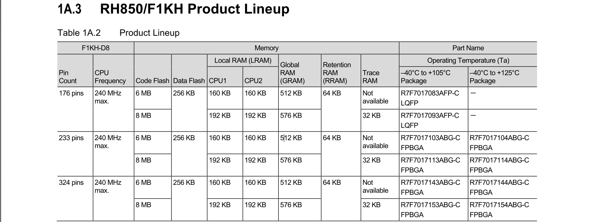
| Series | Pin count | Code Flash size | LOCAL RAM(CPU1) | LOCAL RAM(CPU2) | RETENTION RAM(Bank B) | GLOBAL RAM(Bank A) | GLOBAL RAM(Bank B) | Part Name |
|---|---|---|---|---|---|---|---|---|
| F1KH-D8 | 176 | 6MB | 0xFEBD8000 ~ 0xFEBFFFFF |
0xFEDD8000 ~ 0xFEDFFFFF |
0xFEF00000 ~ 0xFEF0FFFF |
0xFEEC0000 ~ 0xFEEFFFFF |
0xFEFC0000 ~ 0xFEFFFFFF |
105C: R7F7017083AFP-C / 125C: - |
| F1KH-D8 | 176 | 8MB | 0xFEBD0000 ~ 0xFEBFFFFF |
0xFEDD0000 ~ 0xFEDFFFFF |
0xFEF00000 ~ 0xFEF0FFFF |
0xFEEB8000 ~ 0xFEEFFFFF |
0xFEFB8000 ~ 0xFEFFFFFF |
105C: R7F7017093AFP-C / 125C: - |
| F1KH-D8 | 233 | 6MB | 0xFEBD8000 ~ 0xFEBFFFFF |
0xFEDD8000 ~ 0xFEDFFFFF |
0xFEF00000 ~ 0xFEF0FFFF |
0xFEEC0000 ~ 0xFEEFFFFF |
0xFEFC0000 ~ 0xFEFFFFFF |
105C: R7F7017103ABG-C / 125C: R7F7017104ABG-C |
| F1KH-D8 | 233 | 8MB | 0xFEBD0000 ~ 0xFEBFFFFF |
0xFEDD0000 ~ 0xFEDFFFFF |
0xFEF00000 ~ 0xFEF0FFFF |
0xFEEB8000 ~ 0xFEEFFFFF |
0xFEFB8000 ~ 0xFEFFFFFF |
105C: R7F7017113ABG-C / 125C: R7F7017114ABG-C |
| F1KH-D8 | 324 | 6MB | 0xFEBD8000 ~ 0xFEBFFFFF |
0xFEDD8000 ~ 0xFEDFFFFF |
0xFEF00000 ~ 0xFEF0FFFF |
0xFEEC0000 ~ 0xFEEFFFFF |
0xFEFC0000 ~ 0xFEFFFFFF |
105C: R7F7017143ABG-C / 125C: R7F7017144ABG-C |
| F1KH-D8 | 324 | 8MB | 0xFEBD0000 ~ 0xFEBFFFFF |
0xFEDD0000 ~ 0xFEDFFFFF |
0xFEF00000 ~ 0xFEF0FFFF |
0xFEEB8000 ~ 0xFEEFFFFF |
0xFEFB8000 ~ 0xFEFFFFFF |
105C: R7F7017153ABG-C / 125C: R7F7017154ABG-C |
CPU1 area vs Self area
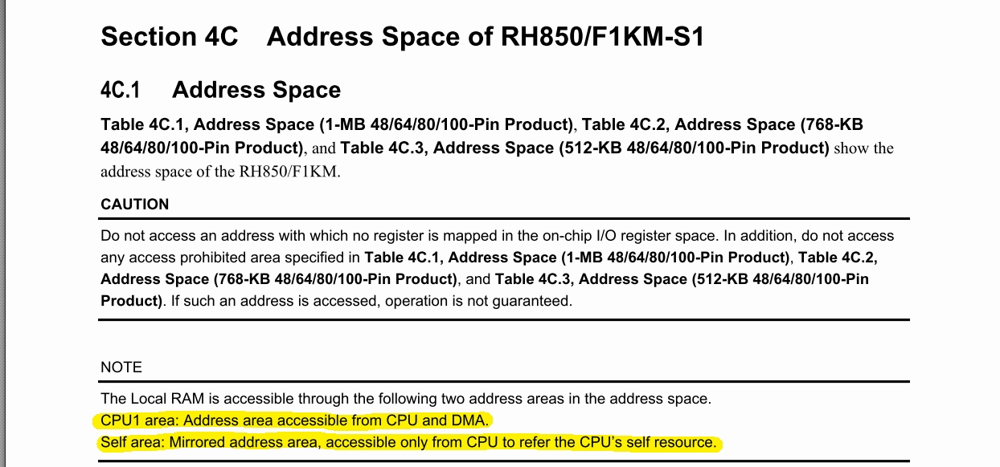
DMA access area (only allow access CPU1 area)

4. SRAM allocation (DMA buffer)
Need to allocate SRAM section for DMA buffer.
- Example (FLASH 512K) :
dma_bufat0xFEBF0000
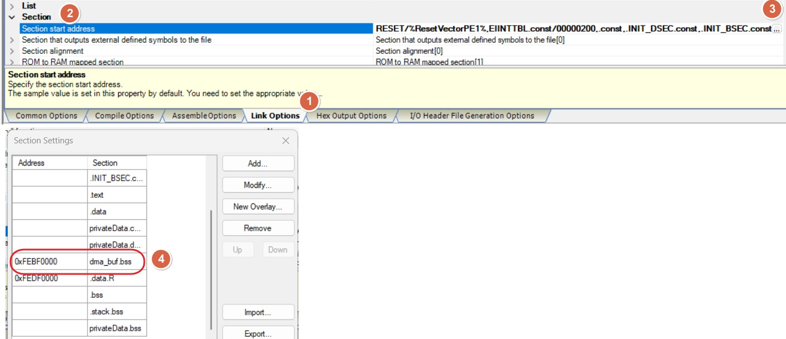
Define TX / RX DMA buffers in dma_buf section:
#pragma section dma_buf
volatile uint8_t s_uart0_dma_rx_ring[APP_UART0_DMA_RX_RING_SIZE];
volatile uint8_t s_uart0_dma_tx_buf[APP_UART0_DMA_TX_BUF_SIZE];
#pragma section default
DMA buffer allocation result in map file:
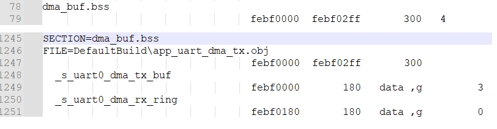
UART DMA TX / RX config
| Item | DMA source address | DMA source address count direction | DMA dest. address | DMA dest. address count direction |
|---|---|---|---|---|
| TX | s_uart0_dma_tx_buf |
increase | APP_UART0_TX_DR |
fix |
| RX | APP_UART0_RX_DR |
fix | s_uart0_dma_rx_ring |
increase |
5. DMA address / register map
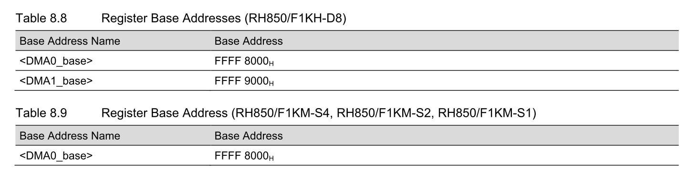
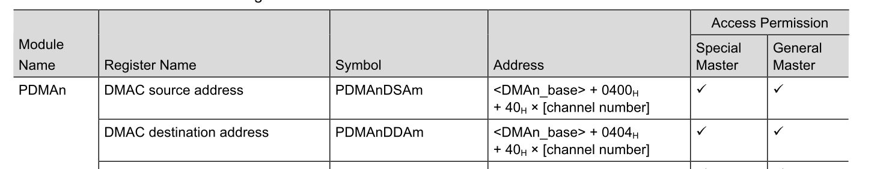
6. UART address / register map
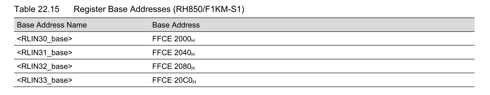
TX : RLN3nLUTDR
RX : RLN3nLURDR
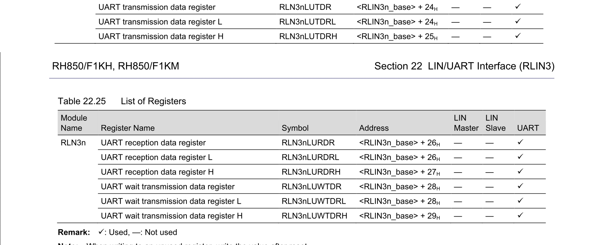
7. Smart Config settings
Target trigger source : UART0
-
INTRLIN30UR0: RLIN30 transmit interrupt -
INTRLIN30UR1: RLIN30 receive complete interrupt
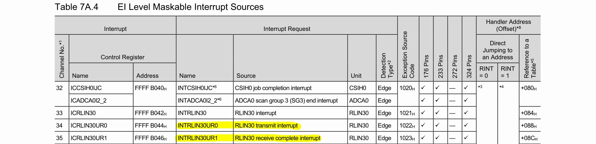
TX configuration
- src : set in code (
s_uart0_dma_tx_buf) - dest : set in code (
APP_UART0_TX_DR) - src count : increase
- dest count : fixed
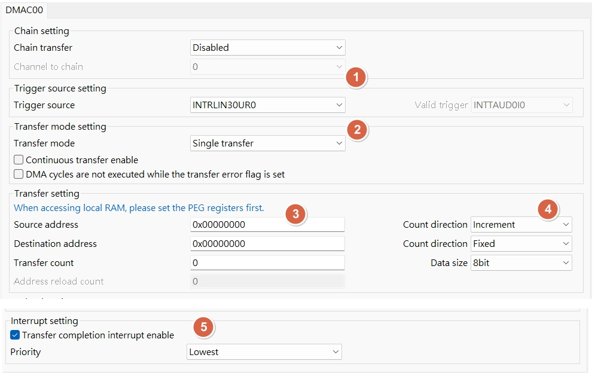
RX configuration
- src : set in code (
APP_UART0_RX_DR) - dest : set in code (
s_uart0_dma_rx_ring) - src count : fixed
- dest count : increase
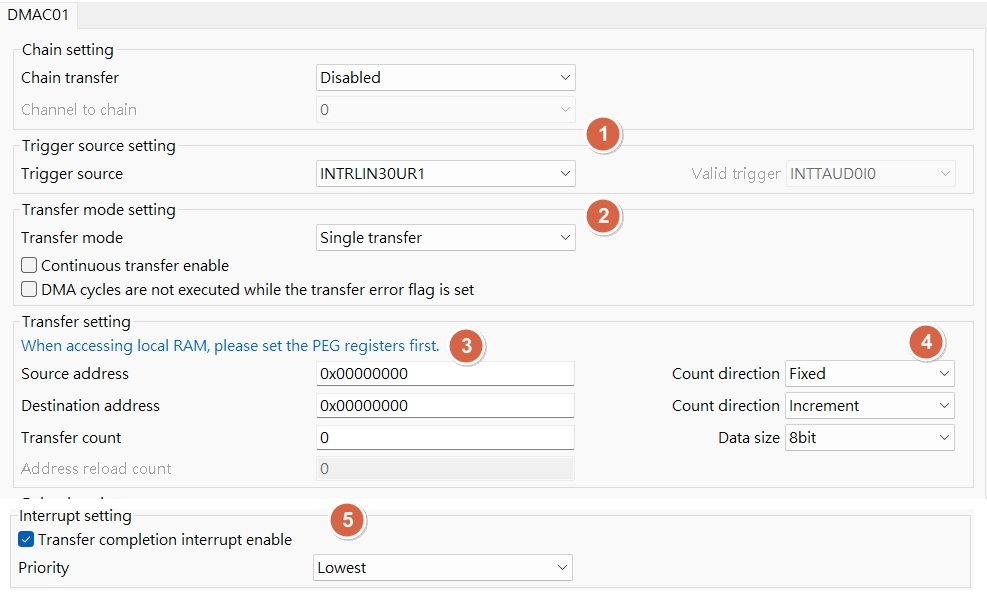
8. Code flow: TX DMA / RX interrupt
TX DMA (UART0)
Goal: CPU prepares a buffer, DMA moves bytes to UART0 TX data register.
Flow summary:
- Prepare
s_uart0_dma_tx_buf[]with payload. - Configure DMA source = buffer, dest =
APP_UART0_TX_DR. - Set count = payload length, src count increment, dest count fixed.
- Enable DMA channel, UART0 TX trigger kicks DMA per byte.
- TX done interrupt (or DMA end flag) marks completion.
Notes:
- TX DMA uses
INTRLIN30UR0trigger. PDMA0.DM00CMmust include PE/SPID/supervisor settings before start.
void APP_UART0_DMA_TxSend(const uint8_t *data, uint16_t len)
{
uint16_t copy_len;
// memset(s_uart0_dma_tx_buf, 0xAA, sizeof(s_uart0_dma_tx_buf));
if ((data == 0) || (len == 0U))
{
return;
}
while (UART0_TX_IS_BUSY())
{
/* wait until TX can accept data */
}
R_Config_DMAC00_Suspend();
R_Config_DMAC00_Stop();
(void)DRV_DMA_ClearTcAndErr(APP_UART0_DMA_UNIT, APP_UART0_DMA_TX_CH);
copy_len = app_uart0_dma_txbuf_write(data, len);
if (copy_len == 0U)
{
return;
}
// tiny_printf("len2:%u\r\n", len);
// tiny_printf("copy_len2:%u\r\n", copy_len);
APP_UART0_DMA_SetCh0(copy_len);
s_uart0_dma_tx_busy = 1U;
R_Config_DMAC00_Resume();
R_Config_DMAC00_Start();
APP_UART0_TX_DR = s_uart0_dma_tx_buf[0];
// while (! (PDMA0.DCST0 & _DMAC_TRANSFER_COMPLETION_FLAG_CLEAR));
while (s_uart0_dma_tx_busy != 0U)
{
/* optional: add timeout / feed WDT */
}
}
RX interrupt (UART0)
Goal: Use UART RX interrupt to capture bytes into a ring buffer, then use idle timer to decide a frame is complete.
Flow summary:
- Enable UART0 RX interrupt (no DMA for RX).
- RX ISR reads
APP_UART0_RX_DRand pushes intos_uart0_dma_rx_ring[]. - Each RX byte restarts the idle timer.
- Timer expiry => treat as end-of-frame, stop UART, set
g_rcv_data_finish. - Main loop checks flag, processes buffer, then re-arm UART + timer.
Notes:
- RX uses
INTRLIN30UR1interrupt source. - RX buffer is in
dma_bufsection to ensure DMA-safe SRAM layout, even though RX is interrupt based.
UART TX / RX : WRITE/READ packet design flow
Target : communicate with GMSL device
- MCU send WRITE packet to GMSL
/* GMSL UART Base Mode WRITE packet format (MCU -> GMSL):
* [0] SYNC = 0x79
* [1] DEV_ADDR_RW = (dev_addr << 1) | 0
* [2] REG_ADDR
* [3] LEN = N (1..255, 256 => 0x00)
* [4..] DATA[0..N-1]
*
* Response (GMSL -> MCU): ACK 0xC3 only.
*/
- MCU send READ packet to GMSL
/* GMSL UART Base Mode READ request format (MCU -> GMSL):
* [0] SYNC = 0x79
* [1] DEV_ADDR_RW = (dev_addr << 1) | 1
* [2] REG_ADDR
* [3] LEN = N (1..255, 256 => 0x00)
*
* Response (GMSL -> MCU): DATA[0..N-1] only (no ACK).
*/
- WRITE/READ packet design flow
- RX?nly vs RX?MA detail difference
9. RX idle detection timer
RH850 UART has no idle interrupt , need to use timer for idle detection (target: 2.5 bytes).
for uart rx idle timer isr :
8N1 , 1 byte = 10 bits
target : 2.5 bytes = 25 bits
target_isr_timing
- baud rate 115200 = (25 / 115200)*10^6 = 217.0us
- baud rate 415000 = (25 / 415000)*10^6 = 60.24us
timer_freq = PCLK(80MHz) / prescaler(1)
CDR0 = (timer_freq * target_isr_timing/10^6) - 1
- baud rate 115200 217.0us = (80MHz * 217us/10^6) - 1 = 80 * 217 - 1 = 0x43CF
- baud rate 415000 60.24us = (80MHz * 60.24us/10^6) - 1 = 80 * 60.24 - 1 = 0x12D3
// #define APP_UART0_BAUD (415000U)
#define APP_UART0_BAUD (115200U)
#if (APP_UART0_BAUD == 115200U)
TAUJ1.CDR0 = 0x43CFU; /* 217 us = 2.5 bytes @115200 */
#elif (APP_UART0_BAUD == 415000U)
TAUJ1.CDR0 = 0x12D3U; /* 60.24 us = 2.5 bytes @415000 */
#else
#error "Unsupported APP_UART0_BAUD"
#endif
10. Debug watch window
If need to check global variable / array in watch windows, enable [Access during the execution] at Debugger Property > Debug Tool Settings tab.
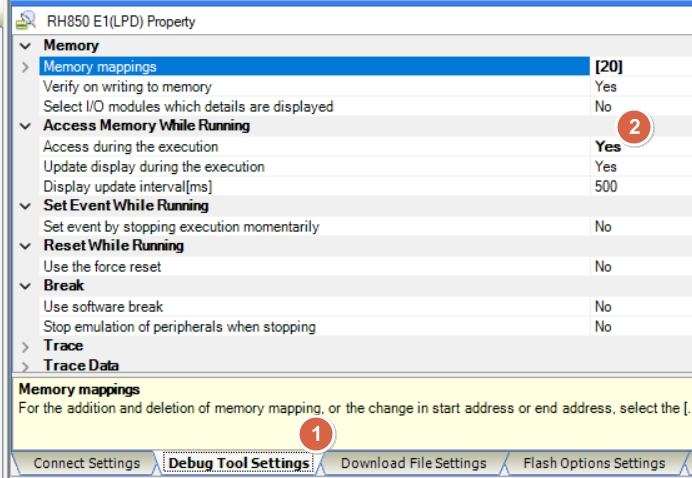